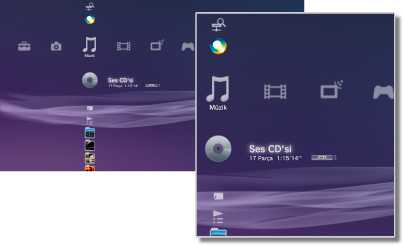

Müzik > Müzik kategorisi
Müzik kategorisi
Aşağıdaki simgeler  (Müzik) altında görüntülenir. Görüntülenen simgeler kullanım koşullarına göre değişir.
(Müzik) altında görüntülenir. Görüntülenen simgeler kullanım koşullarına göre değişir.

 |
(Başlık adı) | Mini boyutta kontrol panelini görüntüler. Bu simge yalnızca müzik içeriği çalınırken görüntülenir. |
|---|---|---|
 |
Ortam Sunucuları Ara | Aynı ağa bağlı DLNA Ortam Sunucuları için bir arama başlatın. |
| Ortam Sunucusu | DLNA Ortam Sunucularına bağlanın ve burada depolanan müziği çalın. Görüntülenen simge sunucu türüne göre değişir. | |
 |
(başlık adı) | Bir Super Audio CD çalın. |
 |
(CD başlığı) | Bir ses CD'si çalın. |
| |
Veri Diski | CD-R veya DVD-R gibi uyumlu, kaydedilebilir disk ortamında müzik dosyaları çalın. |
| DSD Disk | DVD-R gibi uyumlu bir disk ortamına kaydedilen DSD formatındaki müzik dosyalarını çalın. | |
 |
Memory Stick™ | Memory Stick™ ortamında kayıtlı müzik dosyalarını çalın.* |
 |
SD Kart | SD Kart içine kaydedilen müzik dosyalarını çalın.* |
 |
CompactFlash® | CompactFlash® içine kaydedilen müzik dosyalarını çalın.* |
 |
PSP™ (PlayStation®Portable) | Bir PSP™ sisteminin Memory Stick™ ortamına kaydedilen müzik dosyalarını çalın. |
 |
PSP™ (PlayStation®Portable) | PSP™go sisteminin sistem depolama alanına kaydedilen müzik dosyalarını çalın. |
 |
Dijital Kamera | Bir dijital fotoğraf makinesine kaydedilen müzik dosyalarını çalın. |
 |
WALKMAN®/ATRAC Audio Device (WALKMAN®) | WALKMAN®/ATRAC Audio Device (WALKMAN®) içine kaydedilen müzik dosyalarını çalın. |
 |
ATRAC Audio Device | ATRAC ses aygıtına kaydedilen müzik dosyalarını çalın. |
 |
USB Cihazı | Bir USB toplu depolama aygıtına kaydedilen müzik dosyalarını çalın. |
 |
Çalma Listeleri | Oynatma listeleri oluşturabilir veya oluşturulmuş oynatma listelerini düzenleyebilir veya oynatabilirsiniz. |
 |
(klasör) | Bu simge PC kullanılarak depolama ortamında oluşturulan klasörler için görüntülenir. |
 |
(sistem depolama alanına kaydedilen dosyalar) | PS3™ sisteminin sistem depolama alanına kaydedilen müzik dosyalarını çalın. Görüntü verileri varken küçük resim görüntüleri görüntülenir. |
| * |
Depolama ortamını PS3™ sisteminin bazı modelleriyle kullanmak için uygun bir USB adaptörü (birlikte verilmez) gerekir. Bir USB adaptörle kullanıldığında, depolama ortamı |
|---|
 (USB Cihazı) olarak görüntülenir.
(USB Cihazı) olarak görüntülenir.İpuçları
- DLNA hakkında ayrıntılar için, bu kılavuzdaki
 (Ayarlar) >
(Ayarlar) >  (Ağ Ayarları) > [Ortam Sunucusu Bağlantısı] konusuna bakın.
(Ağ Ayarları) > [Ortam Sunucusu Bağlantısı] konusuna bakın. - Nadir durumlarda, PS3™ sisteminde oynatılırken diskler ve diğer ortamlar düzgün çalışmayabilir. Bu, temel olarak yazılımın üretim veya kodlama işlemindeki çeşitlilikler nedeniyledir.
- Sistemin DIGITAL OUT (OPTICAL) bağlantı noktasından Super Audio CD'lerden ses çıkarılırken, basit oynatma (16 bit kullanılarak 44,1 kHz'de oynatır) gerçekleşir.
Uyarı
Super Audio CD'ler bazı PS3™ sistemlerinde oynatılamazlar. Ayrıntılar için, bkz. [Oynatılabilir Disk Türleri].